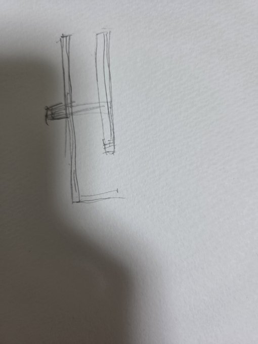
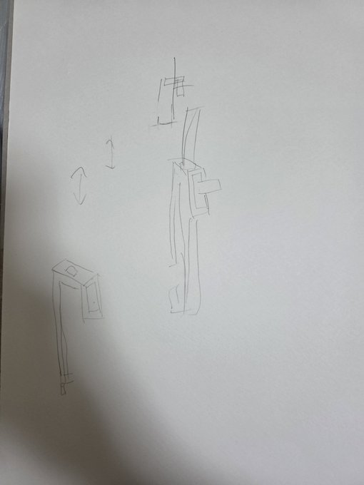
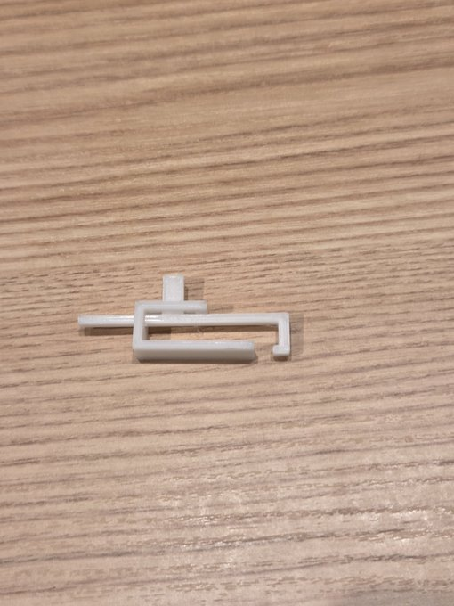
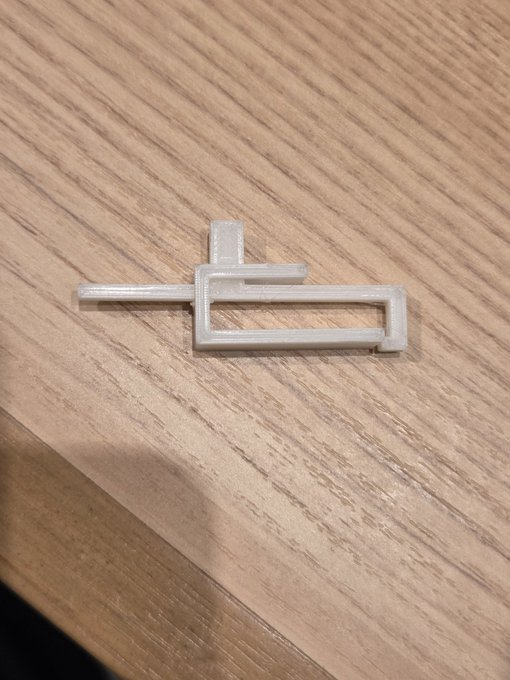

引くタイプのピンセット「マジックピンセット」
スケッチ（初期構想）


作品


設計ファイル
作品について
上の突起をスライドさせることによってものを挟むことができる。
従来のピンセットよりスムーズに小さい力でものを挟むことが可能である。
また、閉じたままの状態にしておくのも楽になっている。
作品制作のきっかけ
ピンセットは横で挟むものという概念を壊したかった。
作品制作の過程で
押し出しのマイナスでボディの収縮方法を試行錯誤した。